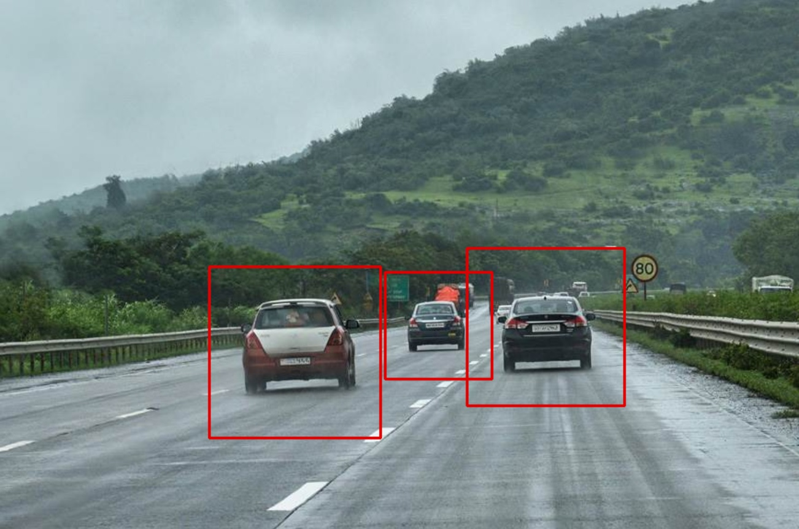
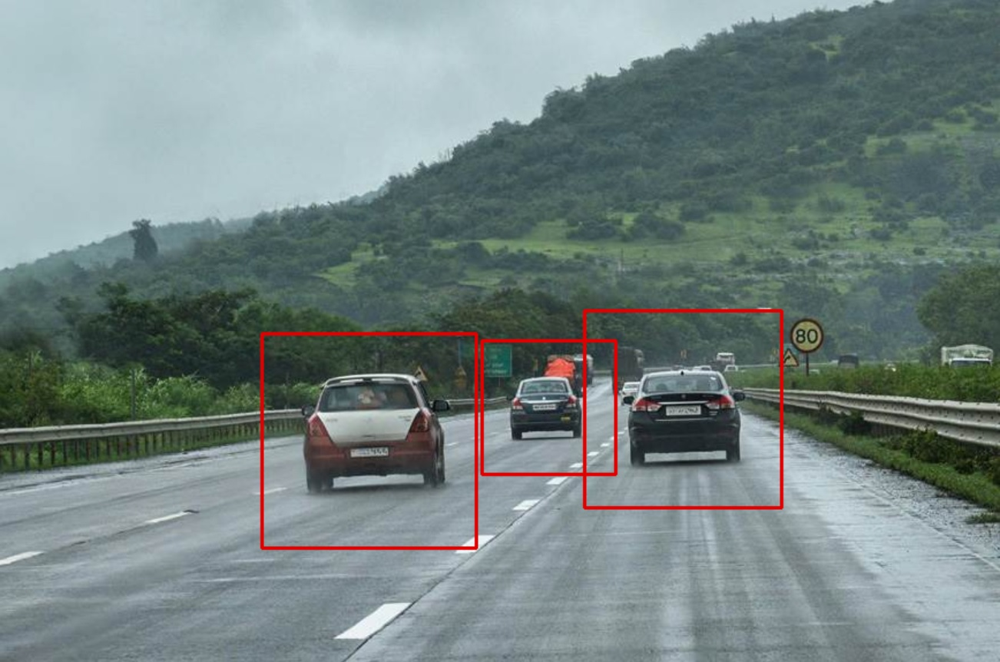

Neste projeto eu fiz um programa de inteligência artificial capaz de identificar a passagem de pessoas e veículos em imagens de câmera através de fotos ou vídeos.
 

Foi utilizado um arquivo .py para rodar o programa principal que tem como auxílio dois arquivos .xml contendo um haar cascade capaz de reconhecer pedestres, disponível dentro da biblioteca do opencv no github, e um haar cascade que contém dados para reconhecer carros, que foi disponibilizada pelo youtuber Clever Programmer.
Também está disponível dentro do programa um vídeo e 3 fotos para o usuário testar o reconhecimento caso não tenha uma câmera disponível para rodar o programa.
Caso queira assistir um vídeo do programa em funcionamento basta clicar neste link